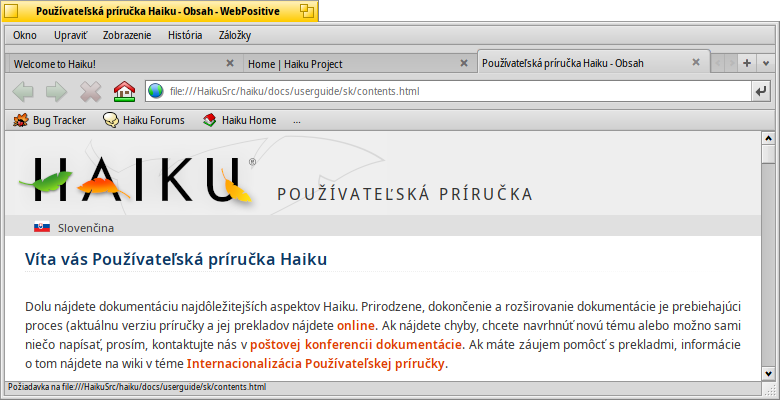
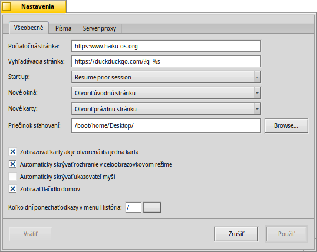
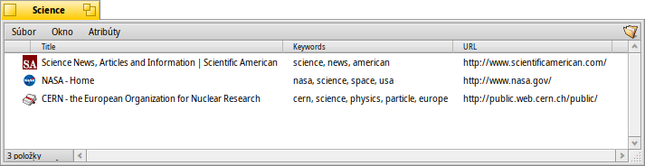
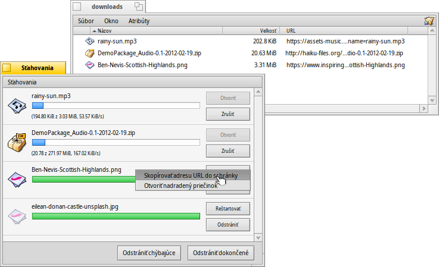

Slovenčina
Slovenčina Français
Français Deutsch
Deutsch Italiano
Italiano Русский
Русский Español
Español Svenska
Svenska 日本語
日本語 Українська
Українська 中文 ［中文］
中文 ［中文］ Português
Português Suomi
Suomi Magyar
Magyar Português (Brazil)
Português (Brazil) English
English WebPositive
WebPositive
| Panel: | ||
| Umiestnenie: | /boot/system/apps/WebPositive | |
| Nastavenia: | ~/config/settings/WebPositive/ - Konfiguračné súbory, cookies, vyrovnávacia pamäť a história prehliadania | |
| ~/config/settings/WebPositive/Bookmarks - Všetky záložky ako samostatné súbory |
WebPositive, alebo skrátene Web+, je pôvodný prehliadač Haiku. Jedna časť jeho názvu, je špička klobúku na jednoduché NetPositive BeOS, druhý ukazuje na moderný základ: WebKit. Táto open source vykresľovacia HTML knižnica je v centre hlavného prúdu ostatných prehliadačov, rovnako ako Safari na Mac OS X a Google Chrome. Pomocou stále sa vyvíjajúcich WebKit, web + je schopný držať krok s novými web technológiami.
Rozhranie WebPositive je celkomjednoduché: V menu je ďalší panel s tlačidlami pre navigáciu na predchádzajúcu a nasledujúcu stránky v histórii prehliadania, zastaviť načítanie stránky a (voliteľne) tlačidlo pre prechod na domovskú stránku.
Potom príde na pole Locator zadať URL stránky.
Pod týmto navigáčným panelom sa objavia webové stránky. Môžete otvoriť viac stránok súbežne vložením ich do vlastnej karty.
V dolnej časti okna je stavový riadok, ukazujúci URL adresu načítavanej stránky alebo odkazu nad ktorým je ukazovateľ myši. Kým sa stránka načítava, panel priebehu sa objaví na pravej strane.
 Nastavenia
Nastavenia
Z ponuky môžte otvoriť panel pre konfiguráciu niektoré základy WebPositive.
Prvá karta sa zaoberá všeobecnými nastaveniami: Aký súbor alebo URL slúži ako , čo je , aký je použitý na veci, ktoré stiahnete z internetu.
Dva pop-up ponuky vám umožnia rozhodnúť, ktorú stránku načítať - ak vôbec - pri otvorení nového okna alebo karty.
Cez nasledujúce políčka sa môžete vyhnúť zobrazeniu lišty, keď je otvorená len jedna stránka tak či tak. WebPositive rozhraniu môže byť povedané, aby sa automaticky skrývalo v režime celej obrazovky a myš môže byť automaticky skrytá keď chvíľu nie je pohybovaná.
Na záver sa môžete rozhodnúť či zahrniete tlačidlo "Domov" v navigačnom paneli a nastavte počet dní, ktoré si prehliadač pamätá stránky, ktoré ste navštívili v jeho histórii.
Na druhej karte si môžete vybrať písmo použité štandardne, serif, non-serif a neproporcionálne písma a nastaviť predvolené veľkosti.
Posledná karta je použitá na konfiguráciu proxy serveru.
Prehliadanie
Ak ste predtým používali nejaký prehliadač, WebPositive by vás nemal prekvapovať. Namiesto prechádzania cez všetky ponuky a funkcie, pozrime sa iba na niektoré body.

Nové karty sú vytvorené tlačidlom + vpravo v lište alebo v prípade, že je ešte dosť miesta, poklepaním na prázdne miesto na nej. Ak existuje viac otvorených záložiek, než vojde do baru, < > rolovacie tlačidlo stane aktívne, čo vám umožní prechádzať lište vľavo a vpravo. ∨ tlačidlo úplne vpravo hostí pop-up menu so všetkými otvorenými kartami pre ešte rýchlejšie navigáciu.
Kliknutie na odkaz stredným tlačidlom myši otvorí stránku na novej karte v pozadí.
Z ponuky môžte a stránku. Tiež je tu možnosť , ponechávajúc obrázky v ich pôvodnej veľkosti.
Ak sa prepnete do režimu celej obrazovky a aktivujete nastavenia skryť rozhranie, zmizne po sekunde. Na jeho dočasné zobrazenie, jednoducho presuňte ukazovateľ myši na hornej časti obrazovky.

Pri písaní v textovom poli Locator, prehliadač priradí reťazce k stránkam, ktoré ste navštívili v minulosti a uvádza ich pod textové pole. Buď budete pridávať viac písmen pre skrátenie zoznamu možných stránok, alebo zvoliť položku s ↑ alebo ↓. ENTER načíta stránku. Môžete tiež použiť tlačidlo úplne vpravo, ktorá slúži tiež na obnovenie stránky.
Reťazce nerozpoznané ako URL sa vyhľadajú cez Google, takže pole Locator slúži ako zástupca pre rýchle vyhľadávanie na webe.Kliknutie pravým tlačidlom myši otvorí kontextové menu, ktoré v závislosti na objekte, na ktorý ste klikli, ponúka otvoriť odkaz v novom okne alebo novej záložke, stiahnite si objekt atď.
zobrazí vyhľadávací panel v spodnej časti okna, pre začiatok vyhľadávania na stránke. Zhody sú na stránke zvýraznené.
Záložky
WebPositive záložky sú riadené ako súbory a priečinky v ~/config/settings/WebPositive/Bookmarks/. Pridanie záložky vytvorí nový súbor. Môžete rýchlo otvoriť zložku .
Môžete zmeniť URL záložiek, meno, titul a zadať kľúčové slová, rovnako ako s akýmkoľvek iným súborom s atribútmi. Len sa uistite, že máte všetky ich stĺpce zobrazené pomocou ponuky Trackeru, potom vyberte súbor, stlačte kláves ALT E a začnite editovanie atribútu, zmeňte stĺpce atribútov TAB.
Môžete triediť záložky do rôznych zložiek, ktoré sami vytvoríte.
Pomocou Trackera pre správu a prehliadanie záložiek môžete zdvihnúť jeho jedinečné vlastnosti rýchlo nájsť to, čo hľadáte.
Aktivácia v Predvoľbách Trackera, môžete okamžite zmenšiť zoznam záložiek zhodujúcich sa s filtrovacím reťazcom. Niekoľko viac
↑ alebo ↓ presunie výber a stlačenie tlačidla ENTER otvorí stránku. Uistite sa, že zobrazujete všetky stĺpce atribútov aby ste aplikovali filter na meno, titul, URL a kľúčové slová.
Aby to fungovalo, všetky záložky by mali byť v adresári ~/config/settings/WebPositive/Bookmarks/ a len kópie by mali byť radené do vlastnom podpriečinku pre použitie v ponuke WebPositive (ak vôbec). Tiež, v skutočnosti vyplnenie kľúčových slov atribút pomáha ..
Sťahovanie
otvára okno vymenúvavajúce všetky uplynulé a prebiehajúce sťahovania:
V súčasnej dobe sťahovanie súborov je zobrazené s rastúcim stavovým panelom, podobne ako kopírovanie súborov v aplikácii Tracker, informáciou o rýchlosti sťahovania, veľkosťou súboru a očakávanou dobou ukončenia. Tlačidlá vpravo umožnia a sťahovanie, alebo súbor, alebo jeho položku zo zoznamu. Tlačídlá a na spodnej strane, pre všetky položky v tomto zozname. "Chýbajúce" sú súbory, ktoré boli odstránené v tejto dobe.
Presunutie súboru, ktorý je v súčasnosti sťahovaný do koša sa zastaví sťahovanie. Môžete si tiež všimnúť, že jeho ikona sa stáva "zástupná".
Všeobecne platí, že WebPositive je veľmi tolerantný, pokiaľ ide o správu súborov s Trackerom. Súbory možno premenovať alebo presunúť, aj keď sa stiahnujú a dokonca aj po skončení sťahovania, tieto zmeny sa prejavia v okne Sťahovania,
Premýšľali ste niekedy z akej stránky ste stiahli príslušný balík, obrázok alebo iný súbor? Môžete to vysledovať, otvorením súboru Diskovou sondou a pozrite sa na jeho META:url atribút.
Chcete mať URL trvale zobrazenú v sťahovacej zložke? Stačí do neho len skopírovať záložky, majte zobrazený stĺpec URL atribútu a znovu odstráňteť záložku.
Klávesové skratky
Tu je niekoľko užitočných skratiek:
| ALT T | Otvorí novú kartu | |
| ALT W | Zatvorí aktuálnu kartu | |
| ALT N | Otvorí nové okno | |
| SHIFT ALT W | Zatvorí aktuálne okno | |
| ALT ENTER | Prepína režim celej obrazovky. | |
| ALT R alebo F5 | Obnoví aktuálnu stránku | |
| ALT H | Otvorí domovskú stránku | |
| ALT D | Zobrazí/skryje okno sťahovania. | |
| ALT F | Zobrazuje vyhľadávacie lištu pre vyhľadávanie na stránke (skryjete s ESC). | |
| ALT B | Vytvoriť záložku na túto stránku | |
| ALT M | správa záložiek, otvorením priečinka záložiek. | |
| ALT ← | Predchádzajúca stránka v histórii | |
| ALT → | Ďalšia stránka v histórii |